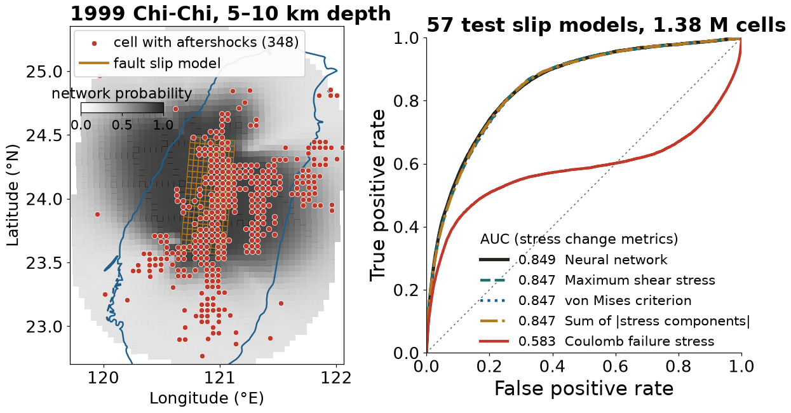

Session 2 · Fri Oct 2 · Book sections 1.1–1.5, 1.9
🧰
By the end of the session, you should be able to evaluate whether a published computational result can be rerun, identify the computing resources a workflow requires, and distinguish an environment from a sandbox or container.
The class will produce a first reproducibility rubric. Each student will begin a repository that can supply evidence for that rubric.
Readings: 1.1–1.5 · Lab: 1.9 workbench setup
🗂️ Catalog & compiled product 🪨 Solid Earth 📈 Seismology
A neural network with 13,451 parameters located aftershocks better than Coulomb stress change (AUC 0.849 against 0.583). A logistic regression on one stress metric, with 2 parameters, scores the same AUC.
DeVries, Viégas, Wattenberg & Meade (2018). Nature, 560, 632–634 · Mignan & Broccardo (2019). Nature, 574, E1–E3.
One data sample is one 5 km cell (slip model 1999CHICHI01MAxx, test set)
| lon °E | lat °N | depth km | max shear MPa | ΔCFS MPa | network p | aftershocks |
|---|---|---|---|---|---|---|
| 120.92 | 24.26 | 7.5 | 7.45 | 1.71 | 0.90 | 1 |
| 120.93 | 24.12 | 7.5 | 8.36 | 1.81 | 0.90 | 1 |
| 120.77 | 24.30 | 7.5 | 7.34 | −0.24 | 0.90 | 0 |
| 120.01 | 23.25 | 7.5 | 0.02 | −0.01 | 0.22 | 1 |
Train and test sets are split by slip model: 142 and 57. Six test models share a year and region code with a training model, such as Colfiorito 1997.

Our rerun of the authors’ open data and weights: network 0.849, Coulomb 0.583, maximum shear stress change alone 0.847.
1.6%
Hydrology and water resources: results could be reproduced from the available artifacts for 1.6% of the tested articles, in a sample of 360 articles from 2017.
Stagge, J. H., Rosenberg, D. E., Abdallah, A. M., Akbar, H., Attallah, N. A., & James, R. (2019). Assessing data availability and research reproducibility in hydrology and water resources. Scientific Data, 6, 190030.
86% vs 54%
Geophysics: 86% of 200 articles carry a data availability statement; the original data can be reached for 54%.
Ireland, M., Algarabel, G., Steventon, M., & Munafò, M. (2023). How reproducible and reliable is geophysical research? Seismica, 2(1).
2 of 41
Geoscience papers with open R code: rerunning all 41 raised 173 technical issues, and 2 papers ran without any.
Konkol, M., Kray, C., & Pfeiffer, M. (2019). Computational reproducibility in geoscientific papers: Insights from a series of studies with geoscientists and a reproduction study. International Journal of Geographical Information Science, 33, 408–429.
2 HPC systems
Climate modeling: the older EC-Earth3 version produced statistically different climates on two computers; the newer version passed the same test.
Massonnet, F., Ménégoz, M., Acosta, M., Yepes-Arbós, X., Exarchou, E., & Doblas-Reyes, F. J. (2020). Replicability of the EC-Earth3 Earth system model under a change in computing environment. Geoscientific Model Development, 13, 1165–1178.
Where geoscience reproducibility has been measured, a minority of results could be rerun: 1.6% of tested hydrology articles and 2 of 41 papers with open R code.
12 minutes in pairs
Then complete two sentences:
Another team could rerun this result because the authors provide ___
Another team would get stuck at ___ because ___
Then propose one observable criterion for the course rubric.
“Uses GitHub” describes a platform. “A fresh clone regenerates Figure 3 from documented commands” states an observable test.
| Same data | Different data | |
|---|---|---|
| Same analysis | Reproducible | Replicable |
| Different analysis | Robust | Generalisable |
Hold the research question fixed. The Turing Way definitions (book 1.1). The National Academies (2019) use the top row; some fields swap the two words, so the rubric names the test that was run.
Each cell corresponds to a distinct claim. Rerunning a notebook on the original data tests only reproducibility, the upper-left cell.
| Passed | Rules out | Still possible |
|---|---|---|
| Reproducible | missing steps, unbuildable environment | a bug, a leak, a bad metric |
| Robust | dependence on one seed, split, or choice; no baseline | a quirk of this data set |
| Replicable | dependence on one station, region, period | a shared blind spot in the method |
| Generalisable | dependence on one data set and pipeline | nothing is settled for good |
The aftershock network passed the reproducible test (AUC 0.849 on rerun). Its advantage over a simple baseline failed the robust test: maximum shear stress alone scores 0.847.
| Dimension | Observable evidence |
|---|---|
| Scientific claim | one result and its success condition are stated precisely |
| Data and provenance | source, version, license, and processing history are recorded |
| Code and workflow | a fresh clone exposes the full path from data to result |
| Environment and compute | dependencies, hardware needs, and run commands are specified |
| Evaluation | split, baseline, metric, and uncertainty match the claim |
| Publication and credit | outputs are citable; people, data, software, and AI help receive credit |
0 missing · 1 present but incomplete · 2 another team can verify it
Rubric criteria should describe inspectable evidence and the scientific claim that the evidence supports.
Before using the rubric for grades, test whether two evaluators interpret it similarly.
Disagreement may reveal ambiguous wording, missing evidence, or a substantive difference in scientific judgment.
Hardware is the physical machinery that executes and stores the work.
| Resource | What it does | Typical bottleneck |
|---|---|---|
| CPU | general instructions; many scientific tasks | serial code or too few cores |
| GPU | many similar operations in parallel | model/data transfer and GPU memory |
| RAM | working memory for running processes | arrays or tables do not fit |
| Storage | persistent files and checkpoints | capacity and read/write speed |
| Network | moves data between systems | bandwidth, latency, access rules |
The aftershock rerun reads 57 files (400 MB, 1.38 million cells): 2 min 40 s on a laptop the first time, 25 s once cached, with about 13 s of CPU time.
| CPU | GPU |
|---|---|
| a small number of sophisticated cores | many simpler arithmetic units |
| strong performance for branching and sequential logic | strong performance for uniform parallel operations |
| usually accesses large system memory | usually uses separate, capacity-limited device memory |
| common target for preprocessing and general scientific code | common target for tensor operations and neural-network training |
Moving data between CPU memory and GPU memory has a cost. Small models, irregular algorithms, and slow data pipelines may gain little from a GPU.
| Context | What it means | Good fit | Main tradeoff |
|---|---|---|---|
| Local laptop | hardware you control directly | exploration, small data, offline work | limited memory, storage, and uptime |
| Back-end Linux server | remote shared machine reached through a network | longer jobs, shared data, stable services | permissions and shared resources |
| Cloud server | rented remote compute created on demand | temporary scale, public services, special hardware | cost and data governance |
| HPC system | many managed compute nodes plus a scheduler | large parallel jobs, many experiments | queues, modules, storage policy |
A computing center operates shared hardware, storage, networking, schedulers, and support. Hyak is UW’s HPC system.
| Stage | What happens |
|---|---|
| Login | connect to a login node; prepare code, data paths, and a job request |
| Resource request | cores, memory, GPUs, wall time, sometimes node type |
| Scheduling | the scheduler waits for a matching allocation |
| Execution | the job runs on compute nodes, usually without a desktop |
| Persistence | logs, checkpoints, and results go to approved storage before the allocation ends |
Requesting substantially more resources can increase queue time and allocation cost. Requesting too little can terminate the job.
| Term | Question it answers |
|---|---|
| Operating system | Which processes, files, devices, and users does the machine manage? |
| Computing environment | Which interpreter, packages, libraries, and exact versions run the code? |
| Sandbox | Which files, network services, tools, and actions may this process access? |
| Container | Which operating-system-level dependencies travel with the application? |
A lockfile fixes package versions, a sandbox limits what a process may access, and a container also carries operating-system dependencies.
A reproducible run should preserve enough information to reconstruct both software and execution context:
A published figure does not record the software, data, and parameters that produced it, so that information has to be preserved alongside the figure.
Choose a location, the likely limiting resource, and the rubric evidence you would record.
| Case | Decision prompt |
|---|---|
| 4 GB of GNSS data and exploratory plots | laptop, server, cloud, or HPC? |
| 2 TB of continuous waveforms searched overnight | where should data and computation meet? |
| CNN training on 100,000 satellite tiles | when does a GPU help? |
| restricted collaborator data | what should the sandbox prevent? |
Seven minutes in groups. State the assumptions behind one choice. Another group identifies a condition under which that choice would fail.
Open 1.9 and produce evidence for the rubric:
pixi install for the book environment (1.9 Step 4)MLGEO2026_UWNETID, copy the student pixi.toml and pixi.lockThe repository should specify a runnable target, the environment that supports it, and an observable success condition.
Submit three lines before leaving:
HW1 due Mon Oct 12 · Ch 1 quiz opens Tue Oct 6 · Monday begins by scoring your paper and workbench with the revised rubric
ESS 469/569 · Machine Learning in the Geosciences · Autumn 2026